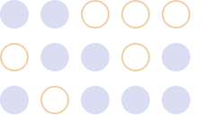
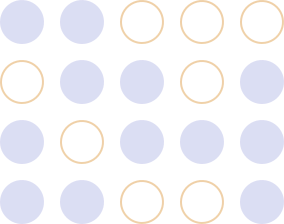

О компании
Каждая сфера экономики восстанавливаетсяв своем темпе: финансовая отрасль придет к допандемическим показателям уже в этом году,
а транспорту и торговле потребуется вдвое больше времени.По данным аналитиков Gartner, лучше всегов 2021 году обстоят дела в IT-сфере.
Рынок цифровых технологий продолжает растии требует поддержки от государственныхи частных компаний.
АНО «Цифровые трансформации» — площадка для популяризации сферы информационных технологий и цифровой экономики, а также презентации
российского опыта в данных сферах на международной арене.
Источники финансирования
Основными источниками финансирования деятельности АНО являются привлекаемые спонсорские средства.
Кроме того, уставные документы позволяют АНО получать целевое финансирование в виде государственных субсидий на реализацию уставных целей.
Генеральный директор АНО – Цой Л.А.
Миссия проекта
Мы стремимся продвигать на мировой цифровой арене передовые отечественные технологические решения и подходы к регулированию цифрового развития,
а также содействовать укреплению международного имиджа России как глобальной технологической державы
Мы ставим своей целью развиться в единую точку входа для международных мероприятий, посвященным вопросам развития информационных технологий и
цифровой трансформации, проводимых в России и Россией по всему миру.
Направления деятельности
Проведение мероприятийна темы цифровой экономикии информационных технологий
Взаимодействие с органами власти, привлечение финансирования для IT-проектов
Презентация российских достижений в IT-сфере на международном уровне
Создание рабочих группи привлечение нужных кадровдля работы над проектами
Сотрудничество с коммерческимии некоммерческими организациями и органами власти в рамках IT-проектов
Ведение бюджетов мероприятийи предоставление прозрачной отчетности
Информационная поддержка мероприятий в сфере IT
Ведение календаря мероприятий, которые представляют интересдля IT-сообщества


Учредители
АНО «Цифровые трансформации» создана организациями с опытом выстраивания эффективных коммуникаций
с крупными национальными и международными партнерами и проведения мероприятий высокого уровня
Негосударственное образовательное частное учреждение высшего образования «Московский финансово-промышленный университет «Синергия»
Имеет уникальный опыт проведения масштабных зрелищных мероприятий и шоу с участием выдающихся общественных деятелей
Московская Ассоциация специалистови организаций в сфере событийного туризма (МАСТ)
Обладает опытом организации и проведения мероприятий с участием иностранных делегаций, мероприятий событийного туризма,
опытом работы с органами государственной власти